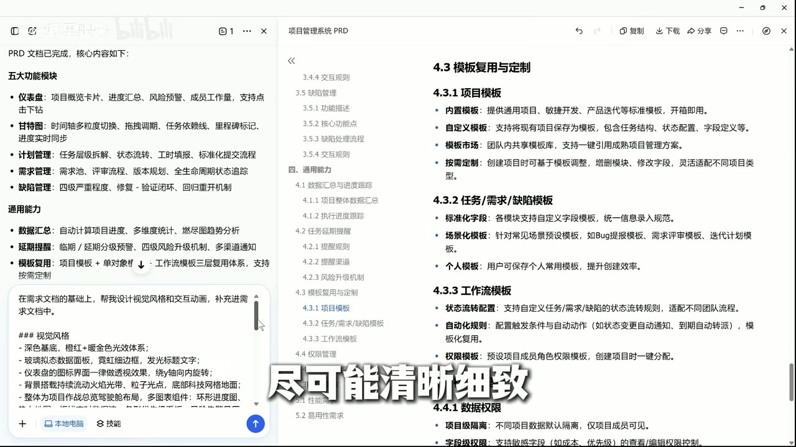

原视频 · 在线回看
点击后联网加载 B 站播放器；本地不下载整段视频。

原视频 · 在线回看
点击后联网加载 B 站播放器；本地不下载整段视频。
来源：2分钟VibeCoding项目管理系统(建议收藏)｜文档见评论区【B站AI创造公开赛】｜UP 主：英雄哪里出来｜时长：3 分 5 秒｜打开视频｜阅读强度：深度
同时推进几个项目时，很容易记不住每个项目停在哪里：哪项任务还没开始，哪项已经延期，哪处问题还需要修改。英雄哪里出来经常并行制作不同教程，因此想要一套符合自己需要的项目管理工具。他用豆包辅助完成了这个尝试。理解这个案例，重点是看一个大致想法怎样逐渐变成明确需求，以及界面做出来之后怎样检查它能否真正使用。
起初不需要已经想好每个按钮的位置。可以先告诉 AI，大致想管理什么，希望解决哪种混乱，让它帮助列出可能的功能。AI 擅长补全常见结构，但补出来的内容往往比真正需要的多。因此，第一份文档只是开始，后面还需要人来选择和删减。
第一步是生成产品需求文档，通常简称 PRD。它用文字说明这个软件给谁使用，需要完成哪些事情，以及主要功能如何组织。这个案例里，AI 按关键词建立文档结构，再逐个填写模块。生成的内容包含仪表盘、甘特图、计划管理、需求管理和缺陷管理等部分，它们分别从概览、时间安排、任务、待做需求和问题处理等角度组织项目。
把候选功能列出来以后，使用者才比较容易判断哪些与自己有关。比如，独自管理项目的人，可能暂时不需要复杂的角色分工。若照着第一份长文档全部实现，系统会增加许多自己很少使用的入口，还可能花时间处理不必要的复杂度。删去当前不需要的内容，是把常见软件模板变成个人工具的重要一步。
这里也需要分清复杂权限体系与基本安全。个人使用可以减少多用户角色，但仍然要避免重要数据丢失、敏感信息意外公开，以及危险操作缺少确认。是否只有自己使用，影响的是具体设计范围，不能据此省去所有安全考虑。功能做减法时，仍应知道某一项原本在防止什么问题。
完成需求之后，还有一个明显空缺：即使知道要显示任务列表，也还没有决定页面的视觉风格、信息层次和交互方式。同样的功能，可以呈现为简洁的表格，也可以呈现为图表很多的仪表盘。若不表达偏好，AI 就会按自己的常见模式选择，最后虽然有相应模块，使用起来却可能与想象不同。
因此，英雄哪里出来继续要求 AI 把视觉和交互规则补进文档。这个案例选择了深色基底、橙色与暖金色强调、带透明质感的面板，以及持续变化的背景效果。它还描述了界面切换和动画。这里值得理解的是，颜色、材质、动效也成为了可以明确讨论的要求；这些风格是这个项目的个人选择，其他项目完全可以采用更安静的呈现。
把规则写下来，后续反馈也会更具体。只说“做得好看一点”，AI 需要猜测我们喜欢什么；明确希望哪些信息更突出、页面切换怎样发生，才能比较生成结果有没有遵守要求。即使第一次做得不合适，也能指出是哪一部分需要改变，不必每次推翻整个页面。
接下来，把已经删减的功能和视觉要求一起交给应用生成。重要的是，生成一个看起来像管理系统的页面，与生成一个可以管理任务的工具，存在实际差别。前者可能只有示例卡片和图表；后者需要按钮产生相应动作，表单能够提交，已有数据能够查到和修改。
案例中的要求特意强调了几件事：不要用假数据冒充真实记录，要实现增加、删除、修改和查询，所有交互都应有效，同时说明数据怎样存放。这些要求把注意力从页面外观推进到操作结果。例如，点“新增任务”之后应出现可填写的表单，保存后应能在列表里找到刚才输入的任务；点“编辑”后，改动应反映到对应记录上。
数据存储尤其需要看清。画面里的要求采用内存数组保存临时记录，也就是把数据留在当前运行的程序里。这能够支持当前页面中的新增和修改，却不等于已经实现长期保存。页面重新加载或运行结束后，数据能否找回，取决于是否另外写入持久存储。内存、浏览器本地保存和服务器存储承担的职责不同，不能因为刚才点过“保存”，就默认关闭以后仍然存在。
这不妨碍用临时数据做原型。原型阶段可以先检查主要操作是否顺畅，再决定正式使用需要怎样保存和备份。只是当我们希望用它管理真实项目时，长期保留记录就会成为功能本身的一部分。把这一点讲清楚，能够避免界面看起来已经完成，却在重新打开时发现此前记录不见了。
应用生成以后，英雄哪里出来打开新增任务窗口，填写负责人、开始日期、截止日期和名称，再尝试保存。随后发现优先级是必填项，需要补选。这个很小的过程，比看一张完整界面图多说明了一件事：表单中有哪些字段，哪些字段必须填写，以及遗漏时会怎样影响操作。
沿着一次真实操作继续走，就可以检查界面与数据是否接上。表单里的名称应当进入任务列表，修改优先级之后，相应显示应改变，删除操作应针对选中的任务。这里的检查都围绕同一条记录进行，容易看清每一步有没有发生。一次成功新增仍然不能代替全部功能检查，但它已经比单纯浏览页面更接近实际使用。
| 操作 | 使用者期望看到什么 | 需要分清的地方 |
|---|---|---|
| 新增任务 | 输入的内容出现在列表里。 | 有示例任务不等于已经支持真实新增。 |
| 修改任务 | 改动反映到同一条记录。 | 弹窗可以打开，还需要确认提交确实更新。 |
| 删除任务 | 目标记录按预期移除。 | 点击有反馈，不等于删除对象正确。 |
| 重新打开 | 需要长期保存的内容仍可找回。 | 运行时内存不自动提供持久保存。 |
后续还能继续调整风格、添加背景效果并填入示例内容，形成更完整的展示。演示数据有助于观察列表密度、状态颜色和排列方式，但应当与真实项目记录区分。看见填满的页面时，我们主要是在观察呈现效果；实际数据管理仍需通过操作和保存行为确认。
最后还有一个常见的小问题：生成结果中的中文可能显示成乱码。文字保存到文件时会转成字节，读取时再按某种编码还原。如果写入与读取采用的编码不一致，就可能看到错误字符。UTF-8 和 GBK 是不同编码，处理时应确认原文件使用什么，再让读写两端采用一致方式。
不宜对已经乱码的文本反复盲目切换或覆盖保存，因为某些字符可能在错误转换后丢失。新项目可以统一采用 UTF-8，发现问题时先保留原文件，再检查读取和保存设置。也不能把所有异常都归到编码：模型生成的文字本身有误、字体缺字或显示问题，也可能需要分别处理。
整个案例可以连起来理解：先形成需求文档，删去不需要的功能，补上视觉和交互要求，再生成应用，用实际操作检查结果。AI 帮助我们快速获得可以讨论的文档和页面，使用者则通过选择、反馈和检验，让它逐渐接近自己的工作需要。页面做得漂亮和工具能够长期可靠使用，都值得认真完成。
第一份需求文档可以先帮助看见可能性，使用者再根据自己的场景删减。功能要求之外，还要表达视觉和交互偏好。
生成应用时，应把增删改查、按钮行为和存储方式说明白。临时内存支持演示，长期保存需要另外的机制。
实际填写一条任务，能够检查必填项和数据变化。继续验证修改、删除和重新打开，才更容易判断工具是否符合真实使用需要。
AI 生成了一份很完整的需求文档，为什么仍然需要你亲自删减？
“新增任务能保存”与“关闭页面后记录还在”，分别需要确认什么？
如果页面有编辑和删除按钮，你会怎样判断它们真的处理了对应数据？